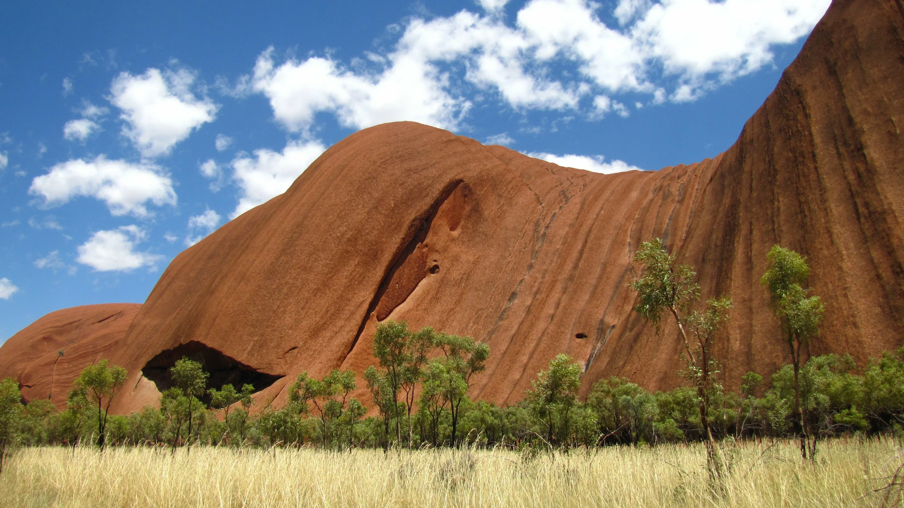
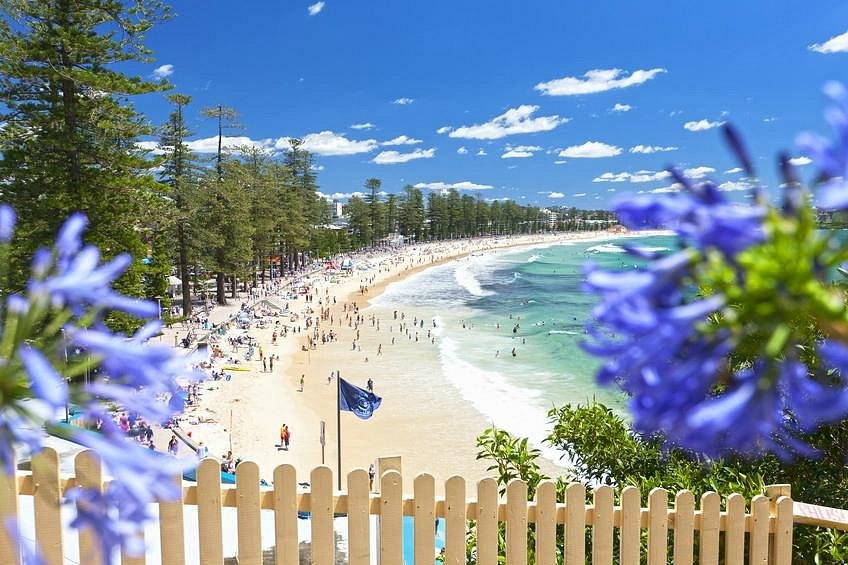
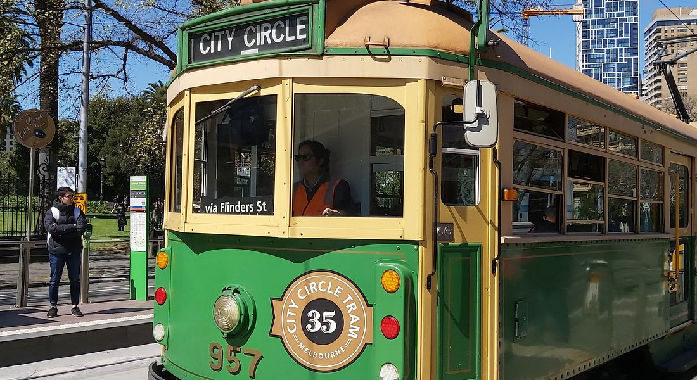
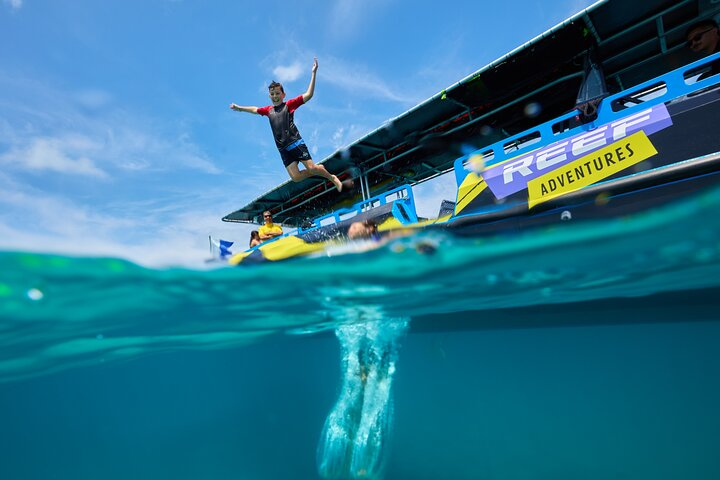
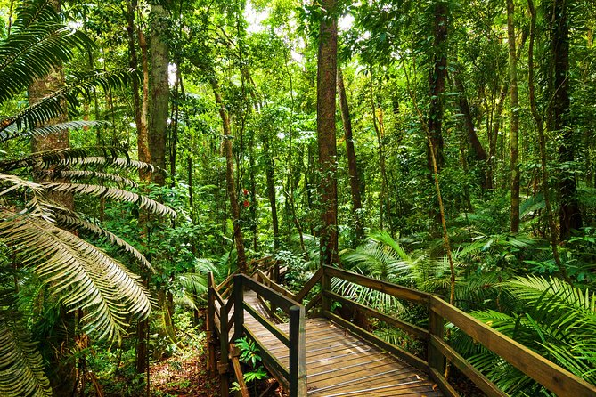

Are you up for travelling and vacation?
DISCOVER AUSTRALIAWITH US
vast and captivating country that never fails to amaze

Are you up for travelling and vacation?
DISCOVER AUSTRALIAvast and captivating country that never fails to amaze
Indigenous Australians have lived in the nation for at least 50,000 years. This means they have the oldest living cultural history in the world. When the British arrived in 1788, as many as 250 different languages were spoken across the nation. The Australian Institute of Aboriginal and Torres Strait Islander Studies has produced this map detailing the languages used across Australia. Barani, an Aboriginal word of the Sydney language that means ‘yesterday’, is a project detailing the Aboriginal history of the Sydney area.
As for now,Australia is the world’s sixth-largest country, covering an area of 7.7 million square kilometers.It is the only continent that is also a country and an island.Australia is home to over 60 different species of kangaroos. The Australian dollar is the country’s official currency.The Great Ocean Road, a scenic drive along the coast of Victoria, is one of the world’s most beautiful drives.The country has a diverse culture with influences from Indigenous Australians, British settlers, and immigrants from around the world.
One of the most iconic buildings in the world – the Sydney Opera House is an architectural masterpiece and vibrant performance space. It's a place where the past shapes the future, where conventions are challenged and cultures are celebrated. Step inside and discover the stories that make the Opera House so inspiring. Whether you’re a local or a tourist, a first-timer or an aficionado, the Sydney Opera House has something for everyone.
Uluru-Kata Tjuta National Park is Aboriginal land. It is jointly managed by its traditional owners Anangu and Parks Australia. The park is recognised by UNESCO as a World Heritage site for its natural and cultural values. The spectacular rock formations and surrounding sand plains provide rare habitats for an incredible variety of plants and animals. Anangu invite you to visit Uluru-Kata Tjuta National Park to learn more about their land, beliefs and culture.
Shop in the sunshine with over 200 stores to explore. Discover funky boutiques in hidden lane ways, wander through the weekend outdoor markets or splurge on a whole new wardrobe on The Corso. Taste an amazing array of flavours in over 100 cafes, restaurants, bars and eateries. Any time of day or night, you'll find a taste to tempt. Live life and discover your hidden talents. Get active with surfing, sailing, scuba diving... and everything in between! Take a dip at the beach, or try your hand at beach volleyball. Feel the sand between your toes after a long day at work. Absorb the geography and the nature that makes Manly special. Nestled between the harbour and the ocean, over 40 beaches and walkways give an escape to the daily grind. Just cast out a fishing line, pack a picnic basket, or bask in the sun. Relax in your favourite spot and soak up the serenity.
The City Circle Tram is a free and convenient way to see the sights of central Melbourne and the Docklands while experiencing a ride on one of the city's much loved heritage trams.An audio commentary provides details of city landmarks and major attractions such as the City Museum, Parliament House, Docklands, Federation Square, Melbourne Aquarium and the Princess Theatre.The City Circle Tram also links with other tram, train and bus routes around Melbourne.To catch the City Circle Tram, simply wait at any tram stop along the City Circle Tram route. These tram stops are specially marked with a City Circle sign.Trams operate in both directions every 12 minutes between 10am and 6pm from Sunday to Wednesday and between 10am and 9pm every Thursday, Friday and Saturday.City Circle Trams do not run on Christmas Day and Good Friday.
The Great Barrier Reef, off the northeastern coast of Australia, is a world-renowned natural wonder. Stretching over 2,300 kilometers (1,400 miles), it is the largest coral reef system on the planet. With its vibrant marine life, crystal-clear waters, and stunning coral formations, the reef attracts millions of visitors each year, including snorkeling enthusiasts.
The remote headland of Cape Tribulation is where two UNESCO World Heritage Sites meet – the Wet Tropics Rainforest and the Great Barrier Reef. The forest tumbles right down to the coast with just a thin strip of sand separating it from the clear blue water. And accessing the reef is simple … with great snorkelling around Mackay and Undine reefs.
Life in Australia is often characterized by a high quality of living and a strong emphasis on work-life balance. People enjoy a relaxed pace of life, with ample opportunities for outdoor activities, social gatherings, and cultural experiences. The country’s multicultural society adds to its rich and diverse lifestyle, making it a dynamic place to live.
Australians value a balanced lifestyle, often prioritizing personal time and leisure. The standard working hours are typically shorter than in many other countries, and there is a strong focus on ensuring that work does not overshadow family and recreational activities.
The country is known for its multicultural society, with a rich tapestry of cultures contributing to a vibrant social scene. This diversity is reflected in the country’s cuisine, festivals, and community events.
Australia offers high-quality education and is considered one of the safest countries in the world. This contributes to a high standard of living, making it an attractive destination for families and individuals alike.